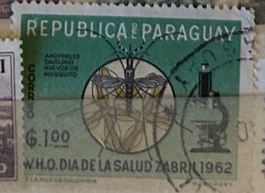
| SOURCE | TITLE| IMAGE MATCH | click to source page |
| eBay | Paraguay: 2 sets of 3 & 5, 1962-63 MNH Lot #10-061301 | eBay | 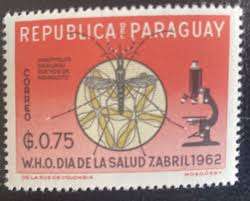 |
| Etsy | Paraguay Stamp Set 1930's to 1968 - Etsy | 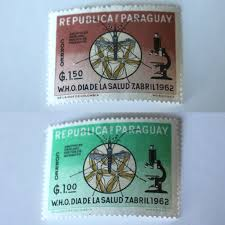 |
| eBay | PARAGUAY # 683 Imperforate Variety MNH ERADICATE MALARIA MEDICAL | eBay | 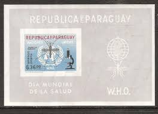 |
| Stamp and Cover Galaxy | SCG175 Paraguay 1962 WHO Health Day Stamps – Fight Against Malaria (An – Stamp and Cover Galaxy | 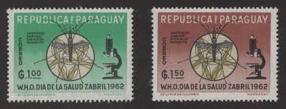 |
| eBay | PARAGUAY , 1962 , MALARIA , SET OF 10 STAMPS + S/S's , IMPERF , MNH , CV$30 | eBay | |
| Alamy | Paraguay postage stamp hi-res stock photography and images - Page 8 - Alamy | 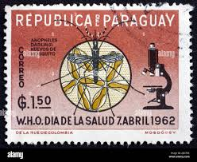 |
| eBay | PARAGUAY Sc # 674-83 CPL MNH SET of 10 - MALARIA ERADICATION EMBLEM, WHO | eBay | 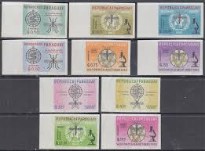 |
| Kenmore Stamp | PARAGUAY MALARIA ERADICATION | 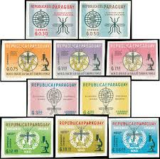 |
| Free stamp catalogue | Stamps from Paraguay - Freestampcatalogue.com - The free online stampcatalogue with over 500.000 stamps listed. | 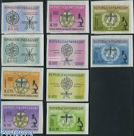 |
| eBay | Paraguay 1962 Medical Health Malaria Insects Mosquito Microscope 10v Imperf MNH | eBay | 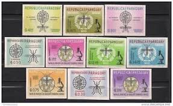 |
| eBay | Paraguay Medicine Malaria research 1950 MLH set with rare Airmail stamps | eBay | 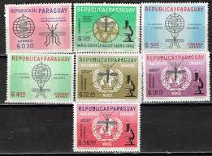 |
| eBay | Paraguay Fauna Insects Malaria Mosquito stamp 1962 MLH B-6 | eBay | 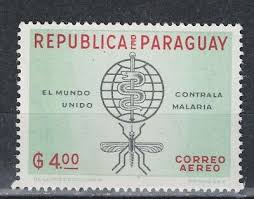 |
| eBay | Paraguay #683a WHO Against Malaria Souvenir Sheet Postage Latin America 1962 MNH | eBay | 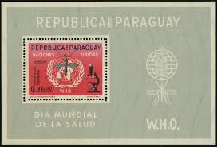 |
| eBay | Medical Paraguayan Stamps for sale | eBay | 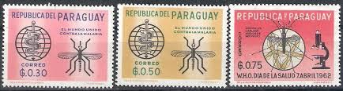 |
| eBay | Paraguay 1962 WHO drive to eradicate malaria Medicine MNH** Full Set A22P33F9675 | eBay | 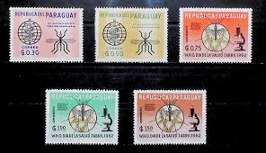 |
| eBay | Paraguay, Scott 674-676--Malaria Eradication--WHO--1962--MLH | eBay | 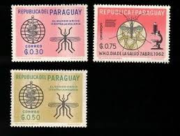 |
| eBay | PARAGUAY # 683 MNH Perforated Variety ERADICATE MALARIA MEDICAL | eBay | 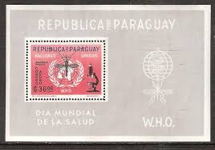 |
| eBay | Paraguay Fauna Insects Malaria Mosquito Microscope stamp 1962 MLH B-6 | eBay | 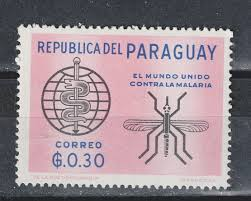 |
| Etsy | Paraguay Stamp Set 1930's to 1968 - Etsy Canada | 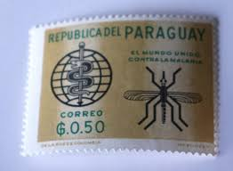 |
| Dreamstime.com | Fight Against Malaria Postage Stamp Campaign Stock Photos - Free & Royalty-Free Stock Photos from Dreamstime | 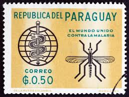 |
| eBay | Paraguay Malaria SC 674-83 Imperf MNH (6gwq) | eBay | 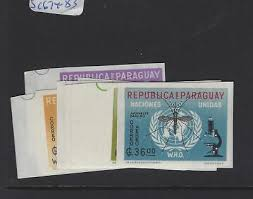 |
| eBay | PARAGUAY , 1962 , MALARIA , SET OF 10 STAMPS + S/S's , IMPERF , MNH , CV$30 | eBay | 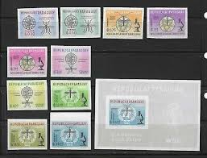 |
| eBay | Paraguay: 1961; 3 set in 3 first day cover, acceptable condition, PR10/ | eBay | 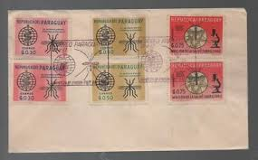 |
| Todocolección | paraguay, 1955, bodas de plata sacerdotales de - Buy Antique stamps of Paraguay on todocoleccion | 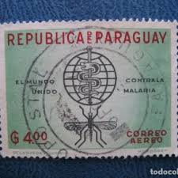 |
| eBay | Paraguay Stamps, Sc. 674-5, 1962, MNH, Malaria Eradication-Mosquito | eBay | 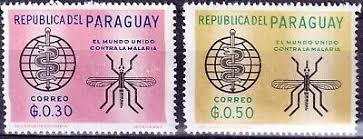 |
| eBay | Paraguay, UN Anti-Malaria Campaign 1962, Scott 674-83, plus 2 S/S, MNH | eBay | 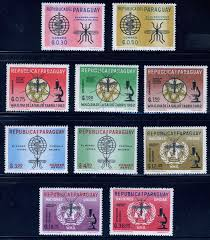 |
| Freestampcatalogue.es | Sellos de Paraguay - Freestampcatalogue.es - El catálogo en línea gratis con más de 500.000 sellos. | 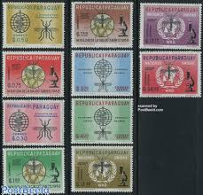 |
| Free stamp catalogue | Stamps from Paraguay - Freestampcatalogue.com - The free online stampcatalogue with over 500.000 stamps listed. | 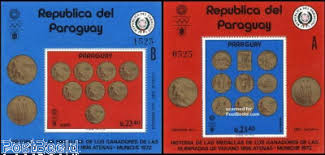 |
| Carousell Malaysia | Assorted Europe Stamps ( 20 PCs ), Hobbies & Toys, Collectibles & Memorabilia, Stamps & Prints on Carousell | 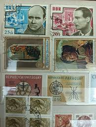 |
| eBay | PARAGUAY LATIN AMERICA COMMEMORATIVE & HEALTH SET USED STAMPS LOT(LA 412) | eBay | 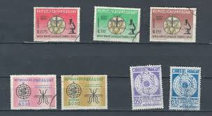 |
| Etsy | Serie di francobolli del Paraguay dal 1930 al 1968 - Etsy Italia | 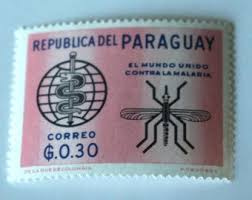 |
| Mesa Stamps | Friedrich Schmiedl and first rocket used for mail delivery | 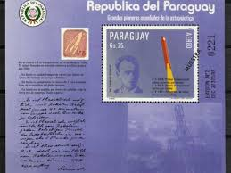 |
| eBay | Aviation Paraguayan Stamps for sale | eBay | 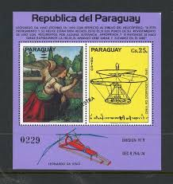 |
| eBay | Paraguay US Space Exploration First Man on Moon set 1976 | eBay | 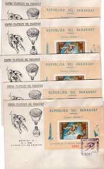 |
| HipStamp | K-Line Scouts Album Pages - VOLUME 6 | Publications & Supplies - Albums & Supplements, Stamp / HipStamp | 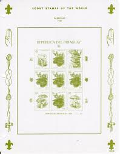 |
| eBay | Paraguay Block Space Postal Stamps for sale | eBay | 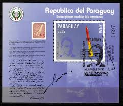 |
| eBay | Paraguay 1965 Pope Paul VI,Lyndon B. Johnson,Satellite,Mi.1487 A+B,Bl.75,76,MNH | eBay | 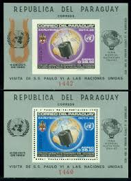 |
| eBay | Paraguay Scott #910a never hinged | eBay | 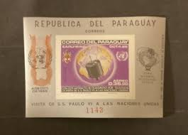 |
| eBay | PARAGUAY STAMPS #910a + IMPERF SS -- EARLY BIRD SATELLITE -- 1965 - MINT | eBay | 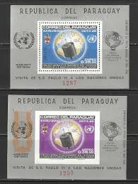 |
| eBay | Uruguay 20 Pesos 2011 Pick 86b Uncirculated Banknote | eBay | 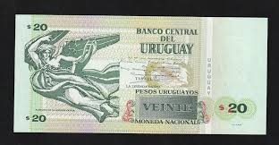 |
| Todocolección | 695490 used paraguay 1989 40 aniversario de la - Compra venta en todocoleccion | 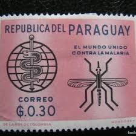 |
| Free stamp catalogue | Stamps from Paraguay - Freestampcatalogue.com - The free online stampcatalogue with over 500.000 stamps listed. | 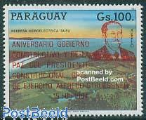 |
| eBay | Paraguayan Guarani Banknote. Paraguay Currency. Memorabilia Note. Papery Money | eBay | 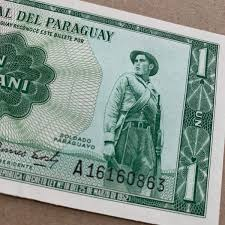 |
| eBay | PARAGUAY 100 Mil Guaranies 2017, 100,000, P-240c, New Security Thread, UNC | eBay | 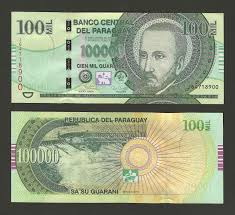 |
| eBay | Vintage World Banknote 100 000 Guaraníes, Paraguay. | eBay | 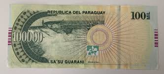 |
| eBay | Paraguay Stamp 766a - Freedom from hunger | eBay | 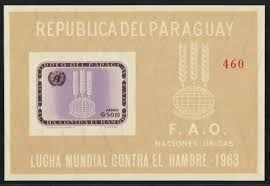 |
| NotesHOBBY | PARAGUAY 20000 20,000 GUARANI 2015/2017 P NEW G PREFIX REVISE SECURITY – NotesHOBBY | 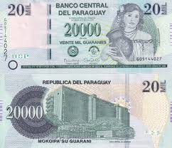 |
| eBay | Paraguay S/S Pioneers of Space Friedrich Schmiedl Muestra O/P 1984 MNH-? | eBay | 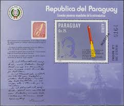 |
| eBay UK | Space Sheet Paraguayan Stamps for sale | eBay UK | 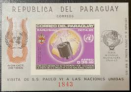 |
| eBay | Paraguay, 100,000 (100000) Guaranies 2015 (2016) P-New Redesigned Serie I UNC | eBay | 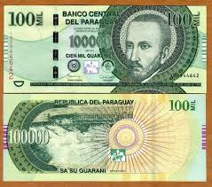 |
| Todocolección | sello paraguay 1 centavos 1903 paz y justicia - - Buy Antique stamps of Paraguay on todocoleccion | |
| Freestampcatalogue.com | Stamps from Paraguay - Freestampcatalogue.com - The free online stampcatalogue with over 500.000 stamps listed. | |
| Todocolección | 1956 paraguay, blessed roque gonzales and st. i - Buy Antique stamps of Paraguay on todocoleccion | |
| RR Auction | Astronauts Signed Stamp Collection | RR Auction | |
| crossfitbarbellbattalion.com | 20 Pesos Gold Mexican Coins 1905-Now URUGUAY 20 Pesos Banknote World Paper Money UNC Currency Bill Note Uruguay Flag | |
| eBay | Paraguay Stamp 1745 - Helicopter design by da Vinci | eBay | |
| eBay | URUGUAY $100 Pesos Uruguayos 2019, Serie H, New, Pack Fresh Original UNC Grade | eBay | |
| eBay | Uruguay, 20 Pesos Uruguayos, 2018, P-New, Upgraded Security Serie H, UNC | eBay | |
| eBay | Paraguay 1963 Freedom from Hunger Souvenir sheets Sc 766a CV $39.50 MNH 7371 | eBay |